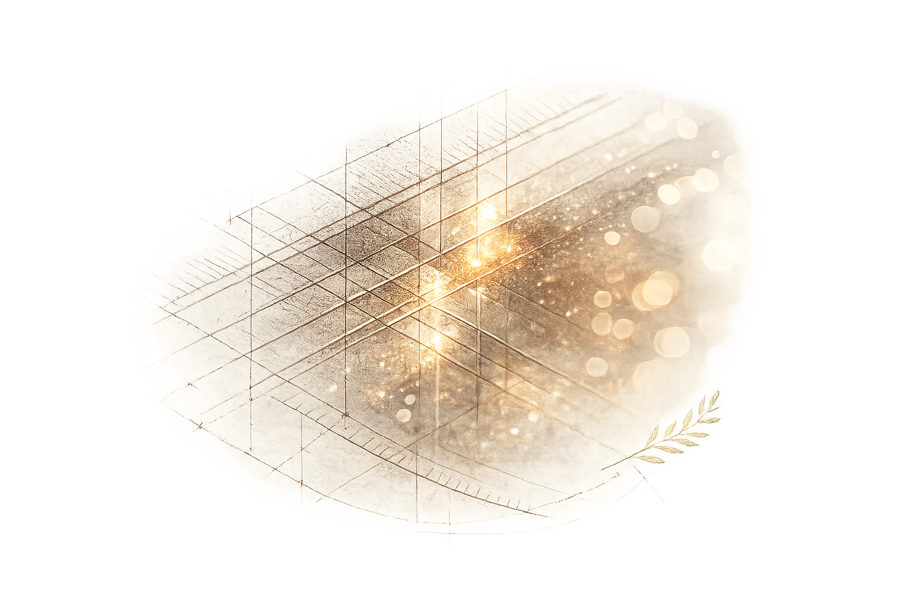

Un paysage
accéléré par l'IA
connecté
Une fois le plan d'action défini, nous digitalisons vos processus clés, transformant le travail manuel et les données dispersées en flux connectés et temps réel fiables. Un seul flux, de la demande à la livraison.

Trois raisons pour lesquelles vos données
doivent produire plus de valeur
Le travail qualité manuel et les systèmes déconnectés créent des coûts invisibles : heures, erreurs, décisions prises sur des données obsolètes. La digitalisation supprime cette inertie structurelle.
Processus connectés
Un seul flux de la demande à la livraison, pas des outils et tableurs déconnectés. Chaque fonction voit la même image, en temps réel.
Données fiables
Des métriques qualité en temps réel et à source unique pour des décisions plus rapides et meilleures. Plus besoin de réconcilier trois versions du même rapport.
Moins d'effort manuel
Automatiser les contrôles, le reporting et la détection d'anomalies, pour libérer vos équipes vers des tâches à plus forte valeur, pas de la saisie de données.
Plateforme par plateforme,
couche par couche
Nous construisons ou renforçons chaque couche de votre architecture digitale, du socle de données à l'IA, en veillant à ce qu'elles dialoguent entre elles et avec l'entreprise.
Une architecture, un flux : pas un assemblage d'outils en silos.
Nous digitalisons le processus — pas seulement installer le logiciel
Une transformation digitale qui ne commence pas par le processus métier est vouée à l'échec. Nous cartographions, simplifions et standardisons avant de digitaliser, afin que l'outil soit un accélérateur, pas une contrainte.
Le processus d'abord
Cartographier et simplifier le processus avant de choisir ou configurer un outil. Le logiciel doit s'adapter au processus, pas forcer le processus à s'adapter au logiciel.
Architecture des données
Définir le socle de données : ce qui doit circuler, où, dans quel format et avec quelle gouvernance. Données propres en entrée, données fiables en sortie.
Déployer et former
Implémentation terrain aux côtés de votre équipe, avec l'adoption utilisateur comme mesure de succès, pas la date de go-live.
Connecter et passer à l'échelle
Intégrer tout le stack et construire une architecture prête pour l'IA, capable de continuer à s'améliorer sans intervention constante.
- Feuille de route de digitalisation qualité et EHS
- Intégration et configuration des processus ERP
- Déploiement de plateforme de gestion fournisseurs
- Sélection, intégration et déploiement MES
- Gouvernance des données et gestion des données de référence
- Intégration IT/OT pour la connectivité atelier
- Identification et déploiement de cas d'usage IA
- Formation utilisateurs et change management
« Des données qualité fiables, en temps réel, à source unique et prêtes pour l'IA : l'avantage compétitif que la plupart des entreprises négligent. »
Commencer par une évaluation de
maturité digitale
Nous cartographions votre paysage digital actuel, identifions les écarts et priorités, et recommandons une feuille de route séquencée afin que vous investissiez d'abord dans la bonne couche.